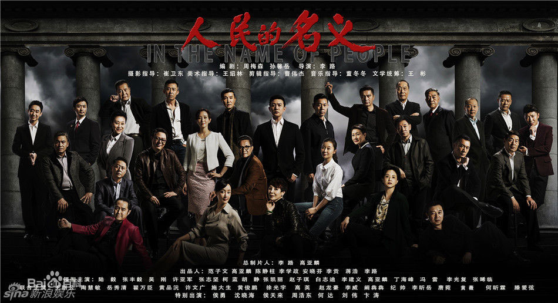
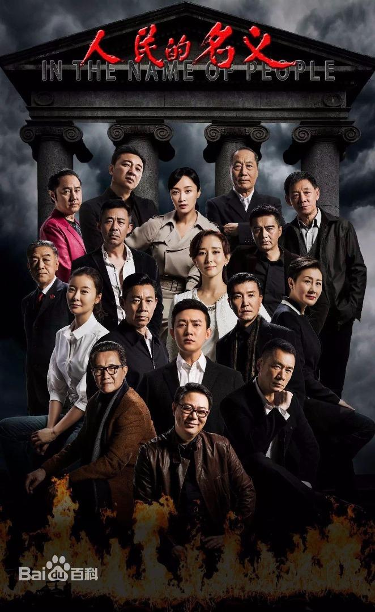

TV series
In the Name of the People
In the Name of the People chronicles the internal power struggle of the Chinese Communist Party in the fictional city of Jingzhou, Handong province, featuring stories about Chinese politics that are often talked about but never seen on mainstream television.
It is noted for its ensemble cast of skilled veteran actors as well as its high quality despite China's strict censorship system. The drama also surpassed 7% in ratings, breaking the single day ratings record for a Chinese drama. The series also received the praise from People's Daily, which is known as the mouthpiece of the Communist Party
 | Time | Awarding Party | Awards |
|---|---|---|
| 2017.4.27 | GMIC X 2017 Extraordinary Ceremony | The most influential film and television works in the Internet era in 2017 |
| 2017.5 | 2016-2017 Craftsman Spirit Award Ceremony | Director Award for the Most Craftsmanship |
| 2017.6.16 | The 23rd Shanghai TV Festival Magnolia Award | Best Chinese TV Series |
| 2018.1.18 | Weibo night | Weibo’s most popular dramas of the year |